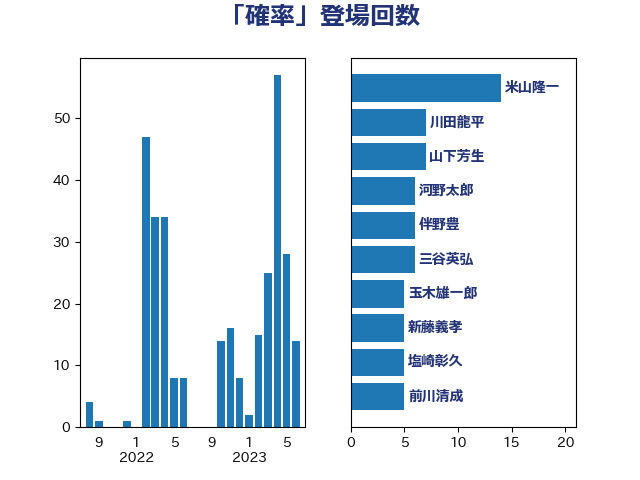

単語「確率」

| 米山隆一 | 立憲民主党 | 14 回 |
| 川田龍平 | 立憲民主党 | 7 回 |
| 山下芳生 | 日本共産党 | 7 回 |
| 河野太郎 | 自由民主党 | 6 回 |
| 伴野豊 | 立憲民主党 | 6 回 |
| 三谷英弘 | 自由民主党 | 6 回 |
| 玉木雄一郎 | 国民民主党 | 5 回 |
| 新藤義孝 | 自由民主党 | 5 回 |
| 塩崎彰久 | 自由民主党 | 5 回 |
| 前川清成 | 日本維新の会 | 5 回 |
| 神津たけし | 立憲民主党 | 4 回 |
| 沢田良 | 日本維新の会 | 4 回 |
| 嘉田由紀子 | 無所属 | 4 回 |
| 北神圭朗 | 無所属 | 4 回 |
| 長浜博行 | 無所属 | 3 回 |
| 鈴木義弘 | 国民民主党 | 3 回 |
| 谷田川元 | 立憲民主党 | 3 回 |
| 谷公一 | 自由民主党 | 3 回 |
| 空本誠喜 | 日本維新の会 | 3 回 |
| 牧山ひろえ | 立憲民主党 | 3 回 |
| 津島淳 | 自由民主党 | 3 回 |
| 梶原大介 | 自由民主党 | 3 回 |
| 山下貴司 | 自由民主党 | 3 回 |
| 土田慎 | 自由民主党 | 3 回 |
| 鈴木敦 | 国民民主党 | 2 回 |
| 野田佳彦 | 立憲民主党 | 2 回 |
| 輿水恵一 | 公明党 | 2 回 |
| 若松謙維 | 公明党 | 2 回 |
| 紙智子 | 日本共産党 | 2 回 |
| 田野瀬太道 | 無所属 | 2 回 |
| 田村貴昭 | 日本共産党 | 2 回 |
| 田村憲久 | 自由民主党 | 2 回 |
| 漆間譲司 | 日本維新の会 | 2 回 |
| 浅野哲 | 国民民主党 | 2 回 |
| 河西宏一 | 公明党 | 2 回 |
| 櫻井周 | 立憲民主党 | 2 回 |
| 志位和夫 | 日本共産党 | 2 回 |
| 岸田文雄 | 自由民主党 | 2 回 |
| 山際大志郎 | 自由民主党 | 2 回 |
| 山崎誠 | 立憲民主党 | 2 回 |
| 尾崎正直 | 自由民主党 | 2 回 |
| 大島九州男 | れいわ新選組 | 2 回 |
| 塩田博昭 | 公明党 | 2 回 |
| 國重徹 | 公明党 | 2 回 |
| 加藤勝信 | 自由民主党 | 2 回 |
| 住吉寛紀 | 日本維新の会 | 2 回 |
| 仁木博文 | 無所属 | 2 回 |
| 三木圭恵 | 日本維新の会 | 2 回 |
| 高良鉄美 | 無所属 | 1 回 |
| 高橋千鶴子 | 日本共産党 | 1 回 |
| 高木真理 | 立憲民主党 | 1 回 |
| 階猛 | 立憲民主党 | 1 回 |
| 阿部弘樹 | 日本維新の会 | 1 回 |
| 野田聖子 | 自由民主党 | 1 回 |
| 進藤金日子 | 自由民主党 | 1 回 |
| 逢坂誠二 | 立憲民主党 | 1 回 |
| 赤木正幸 | 日本維新の会 | 1 回 |
| 西田昌司 | 自由民主党 | 1 回 |
| 西村康稔 | 自由民主党 | 1 回 |
| 西岡秀子 | 国民民主党 | 1 回 |
| 藤巻健太 | 日本維新の会 | 1 回 |
| 菅直人 | 立憲民主党 | 1 回 |
| 荒井優 | 立憲民主党 | 1 回 |
| 芳賀道也 | 国民民主党 | 1 回 |
| 美延映夫 | 日本維新の会 | 1 回 |
| 神田潤一 | 自由民主党 | 1 回 |
| 石川大我 | 立憲民主党 | 1 回 |
| 石井準一 | 自由民主党 | 1 回 |
| 田村智子 | 日本共産党 | 1 回 |
| 田中健 | 国民民主党 | 1 回 |
| 生稲晃子 | 自由民主党 | 1 回 |
| 猪口邦子 | 自由民主党 | 1 回 |
| 湯原俊二 | 立憲民主党 | 1 回 |
| 浅田均 | 日本維新の会 | 1 回 |
| 水岡俊一 | 立憲民主党 | 1 回 |
| 武部新 | 自由民主党 | 1 回 |
| 櫛渕万里 | れいわ新選組 | 1 回 |
| 森山浩行 | 立憲民主党 | 1 回 |
| 根本幸典 | 自由民主党 | 1 回 |
| 柴田巧 | 日本維新の会 | 1 回 |
| 柳ヶ瀬裕文 | 日本維新の会 | 1 回 |
| 柚木道義 | 立憲民主党 | 1 回 |
| 末次精一 | 立憲民主党 | 1 回 |
| 朝日健太郎 | 自由民主党 | 1 回 |
| 斎藤アレックス | 国民民主党 | 1 回 |
| 斉藤鉄夫 | 公明党 | 1 回 |
| 工藤彰三 | 自由民主党 | 1 回 |
| 山谷えり子 | 自由民主党 | 1 回 |
| 山添拓 | 日本共産党 | 1 回 |
| 山井和則 | 立憲民主党 | 1 回 |
| 小野泰輔 | 日本維新の会 | 1 回 |
| 小山展弘 | 立憲民主党 | 1 回 |
| 奥野総一郎 | 立憲民主党 | 1 回 |
| 奥下剛光 | 日本維新の会 | 1 回 |
| 大野泰正 | 自由民主党 | 1 回 |
| 大塚耕平 | 国民民主党 | 1 回 |
| 大串博志 | 立憲民主党 | 1 回 |
| 堤かなめ | 立憲民主党 | 1 回 |
| 堀場幸子 | 日本維新の会 | 1 回 |
| 吉田久美子 | 公明党 | 1 回 |
| 吉田はるみ | 立憲民主党 | 1 回 |
| 吉田とも代 | 日本維新の会 | 1 回 |
| 古川俊治 | 自由民主党 | 1 回 |
| 佐藤英道 | 公明党 | 1 回 |
| 伊藤孝恵 | 国民民主党 | 1 回 |
| 今井絵理子 | 自由民主党 | 1 回 |
| 井林辰憲 | 自由民主党 | 1 回 |
| 中野英幸 | 自由民主党 | 1 回 |
| 中野洋昌 | 公明党 | 1 回 |
| 中川正春 | 立憲民主党 | 1 回 |
| 下村博文 | 自由民主党 | 1 回 |
| 一谷勇一郎 | 日本維新の会 | 1 回 |
| ながえ孝子 | 無所属 | 1 回 |